Bertry Indoor 2010

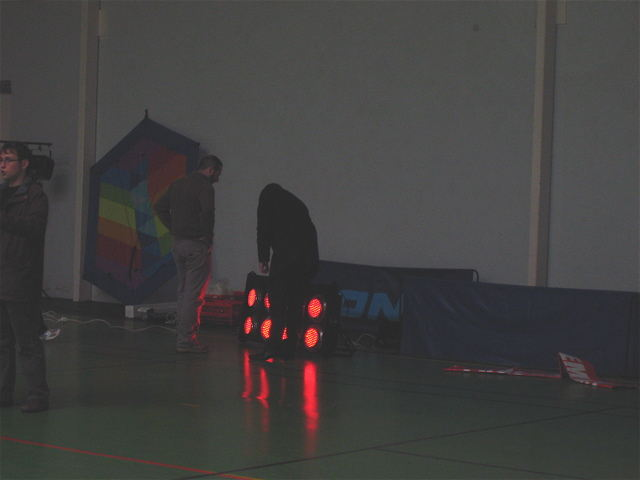
Bertry, au Nord, près de Cambrai, un beau gymnase, premier indoor de l'assoc : le Dynamic Club de Bertry qui, en fait, regroupe les différentes assocs de Bertry, dont la branche Cerf-Volant, ce qui multiplie les possibilités : mise à disposition de la salle, services municipaux, etc.

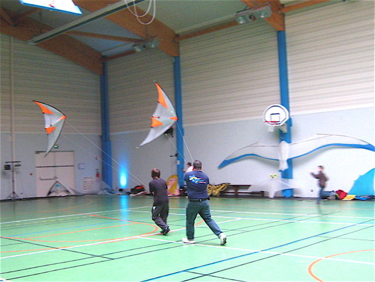
Plusieurs clubs sont montés, comme Moissy-Cramayel dont Frank Guillemet et Maxime qui ont présenté entre autres leur travail en paire !

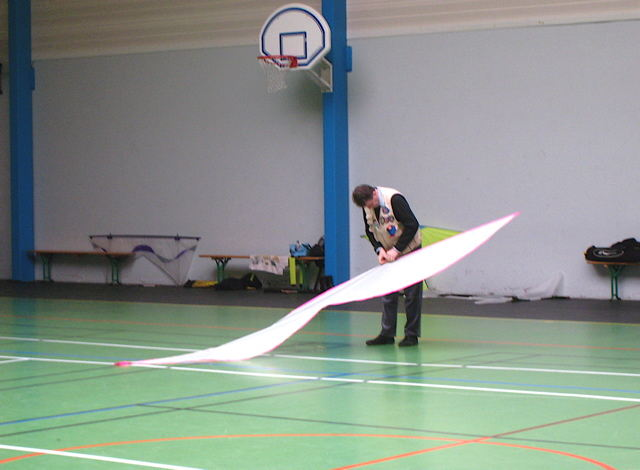
Et aussi un nouveau cerf-voliste indoor que vous reconnaîtrez sûrement ! François veut tout connaître du cerf-volant...

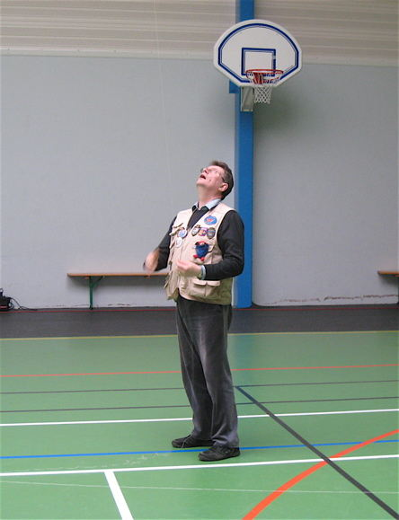
Meme qu'on peut le faire passer au-dessus de la tête, mais la suite est plus délicate !

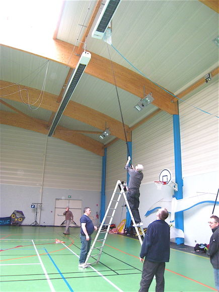
Evidemment, au plafond des gymnases, il y a toutes sortes de bazars : panneaux de basket relevés, éclairages, chauffages, et tous les cervolistes n'ont pas la modestie ou l'habileté de rester au-dessous de leur niveau... Mais avec l'échelle de la salle, la canne de quelqu'un, la lame de cutter d'un autre et un bout de ruban adhésif a moi, on récupèrera !

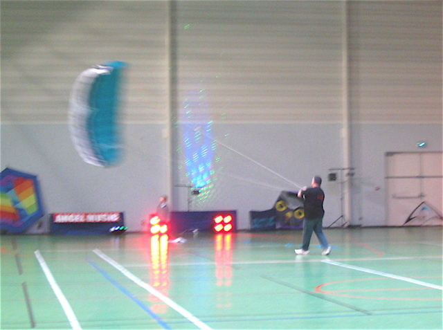
Frank nous fera aussi une petite démo de voile de traction indoor, avec même quelques demi-tours !

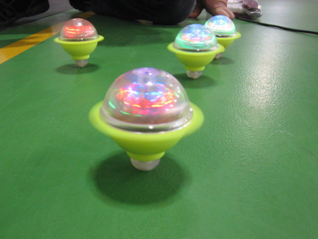
François a aussi amené (de Chine !) quelques gadgets amusants comme ces toupies électronico-lumino-mécaniques !

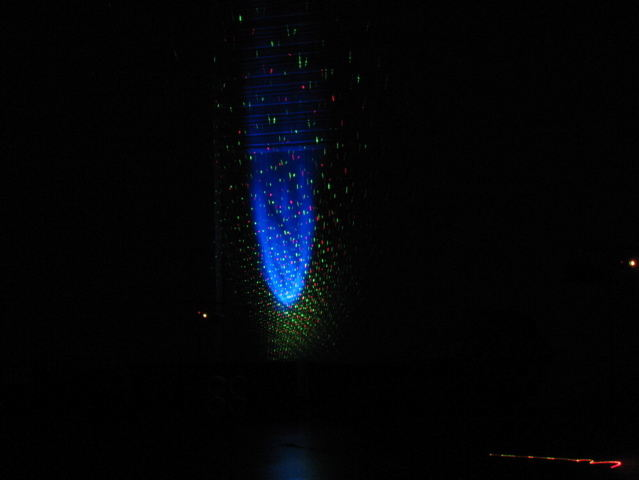
Fin d'après-midi, il fait sombre et on nous a promis un vol avec des effets laser etc. Cet éclairage qui projette une centaine de spots mobiles sur le mur est du plus bel effet...

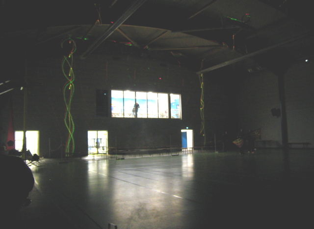
Et les lasers traversent toute la salle pour projeter sur le mur des entrelacs sans cesse changeants...

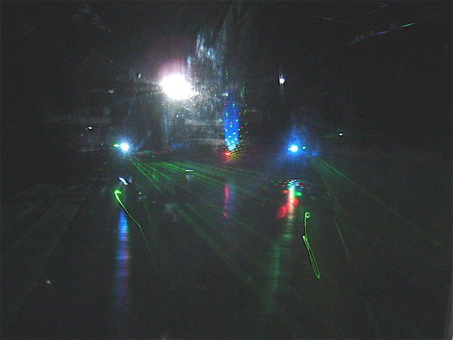
Vu de la salle du haut, l'effet est magique, même si les projecteurs de fumée qui révèlent les faisceaux ne se sont pas montrés à la hauteur...

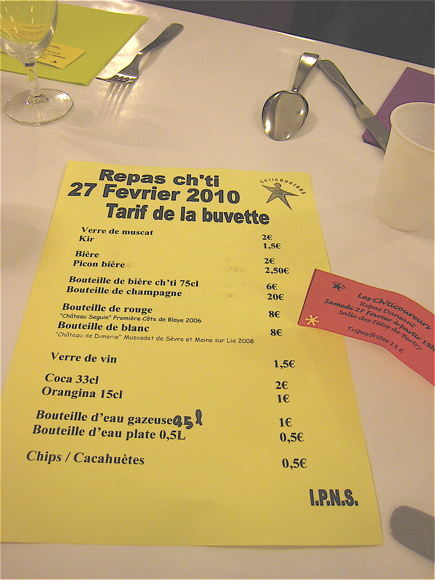
Le soir, repas en commun avec une fête locale, 250 personnes et un DJ... Nous avons même droit à un apéritif gratuit (voir petit trou dans le ticket) !

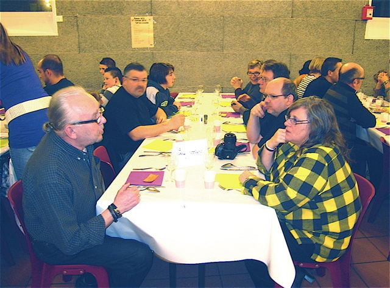
Nous avons une table et demie rien que pour nous, la place vide est la mienne...

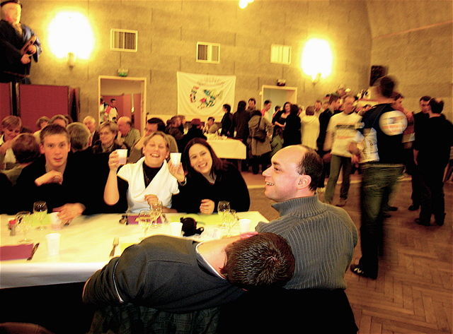
A l'autre table (demi-table), les Ventcourtois s'amusent bien ! Jéremy s'est couché pour me laisser voir les filles, merci Jéremy !

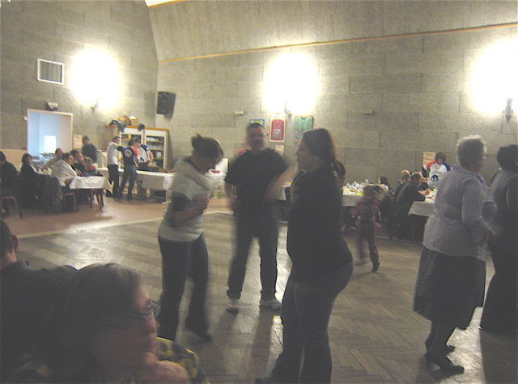
Bon, on a mangé les hors-d'oeuvre, Musique... Nous descendons sur la piste comme les autres, et même plus, on ne fait pas appel aux cervolistes en vain !

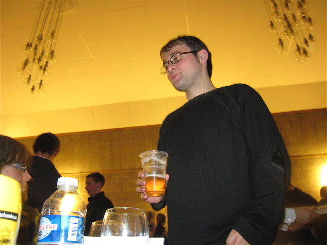
Christophe Enderlé, le GO-chef mange avec nous, mais on ne le verra pas beaucoup, il connaît tout le monde ! ...

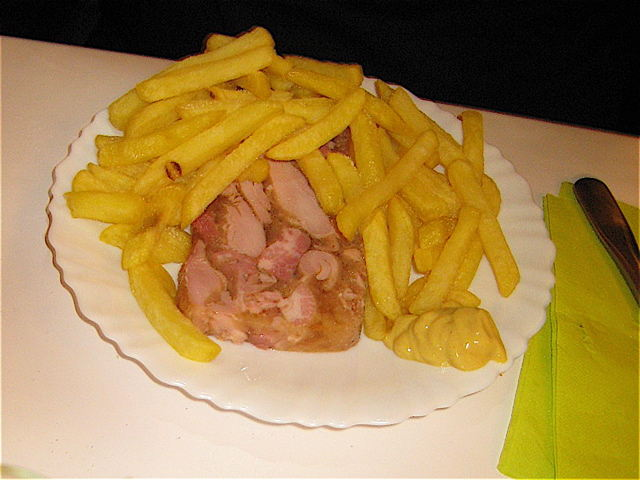
Le plat de résistance : tripes chaudes, ou Potjeflesch froid... C'est comme qui dirait un pâté de tête, avec de gros morceaux de viandes diverses. Ca a l'air bon et bien servi, mais j'ai préféré manger chaud !

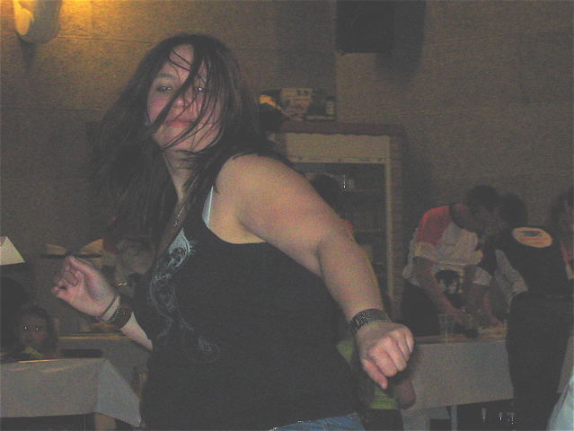
Re-danse, on redescend sur la piste, Estelle se déchaîne !...

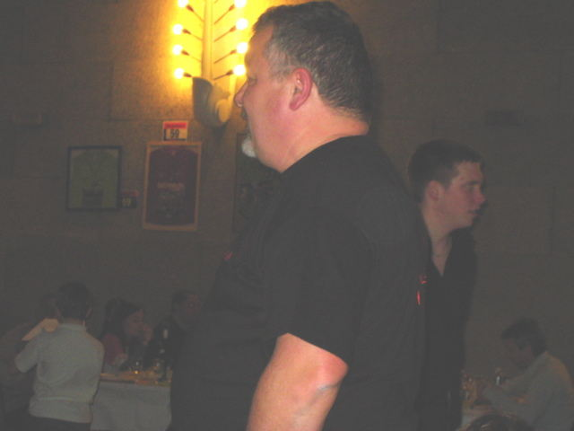
Frank en reste muet, il attend la fatigue pour reprendre ses cours...

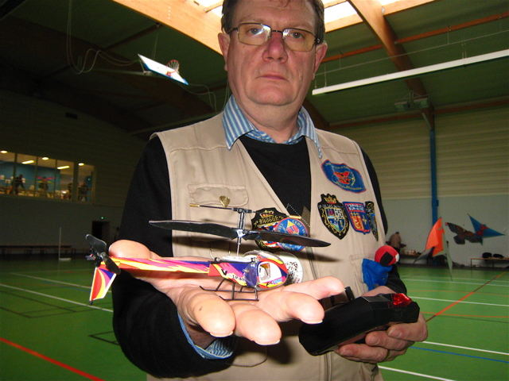
Le lendemain matin, après une nuit passée chez l'habitant, pour moi chez ceux de Christophe, à la Pharmacie bien placée ! François a amené son micro hélicoptère pour des vols courts, et un peu stationnaires... Mais ainsi, on risque moins de se faire accrocher par un monstre volant !

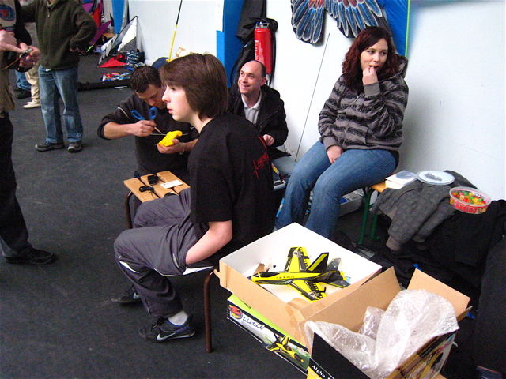
Jéremy, lui, a sorti son avion bimoteur, beaucoup plus rapide, mais il bricole plus longtemps qu'il ne vole !

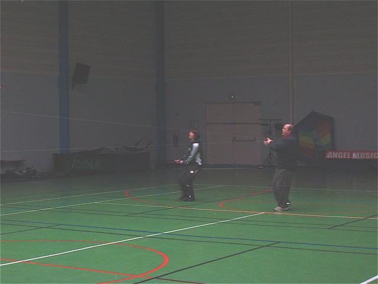
Revenons au cerf-volant, Bruno et son fils nous font une jolie démo en paire, dans le gymnase encore sombre avec cette météo d'enfer ! Il pleut même dans le gymnase, à chaque cheminée d'évacuation du chauffage...

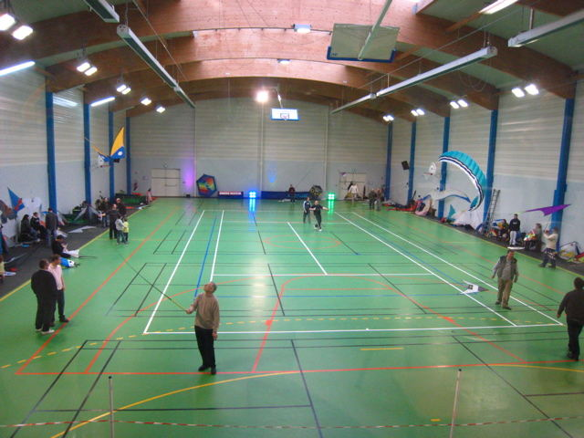
Ce matin, c'est répétition avant le show de cet après-midi face au public... De la salle du haut, on voit bien le spectacle, mais on n'a pas de retour son ! Ici, il n'y a pas trop de monde en vol, c'est parce que Frank nous refait un petit tour de voile de traction...

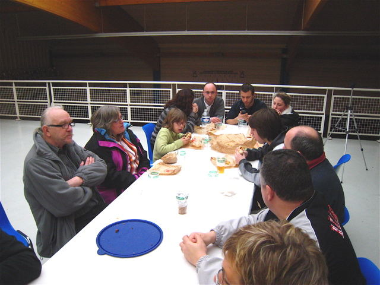
Déjeuner dans la salle de danse, sous les combles, avec des rafales de vent impressionnantes sous la verrière qui protège mal du froid ! Au menu : sandwiches chauds et frites, le tout excellent, abondant et très chaud, en provenance de la friterie voisine...

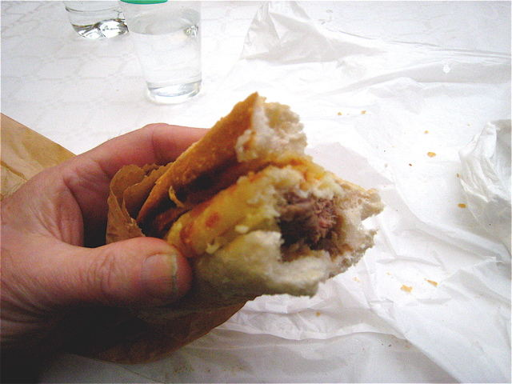
Pour moi, c'était Steack et Maroilles chaud, très parfumé, un délice !

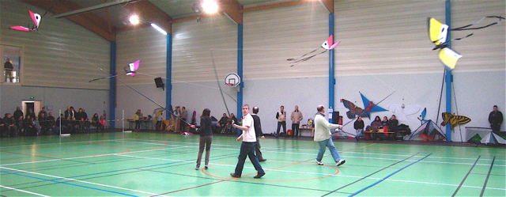
L'après-midi, SHOW ! Le Dynamic Club de Bertry ouvre la danse avec un quadrille de paillons bien synchronisé.

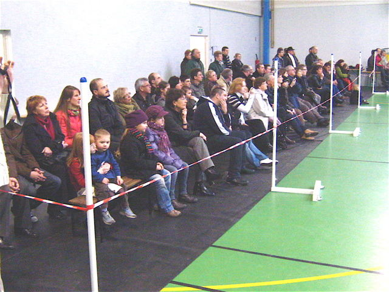
Le public a répondu présent, ceux d'en-bas, les purs et durs qui suivent, se gèlent et ne peuvent pas boire, et ceux d'en haut qui n'entendent rien mais ont accès à la buvette !

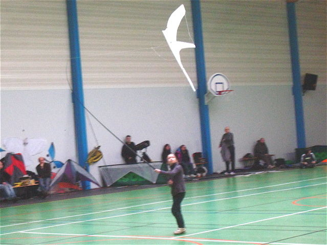
Constance, la nouvelle recrue des Raz-Mokets (8 ans), qu'on avait déjà vue à Grande-Synthe, fera un petit solo avec un oiseau de Yann Derweduwen...

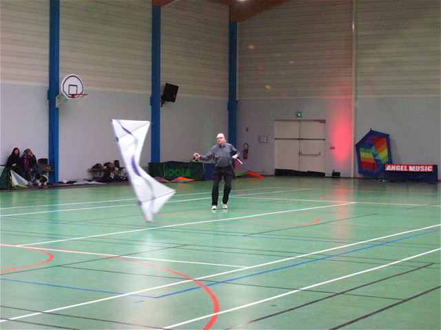
Michel Chantren fera une belle démonstration de son habileté en quatre lignes...

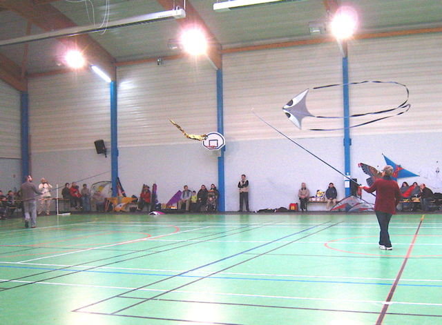
Est'Air fera aussi une démo, avec madame-mère, novice, qui a acheté un cerf-volant au matin, mais en a vite compris l'emploi à la canne !

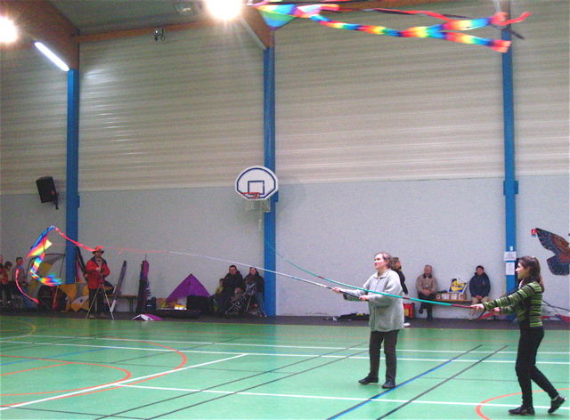
On reverra aussi le club Cerf-vol-Aisne, créé à Grande-Synthe, avec Ludivine qui a par ailleurs inventé un cerf-volant hybride 2 lignes perso... qui vole (mais évolue peu)...

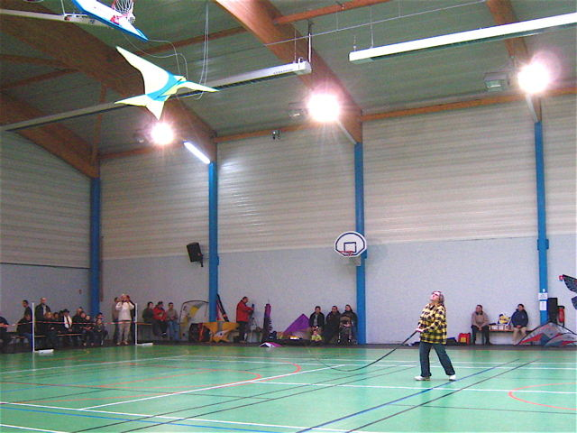
On revoit avec plaisir, malgré ses difficultés à marcher, Astrid faire voler de plus en plus harmonieusement son oiseau.

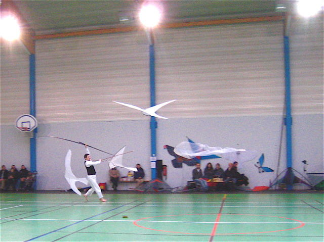
Yann, encouragé par son vol à 3 oiseaux, en fait maintenant voler... quatre à la fois !

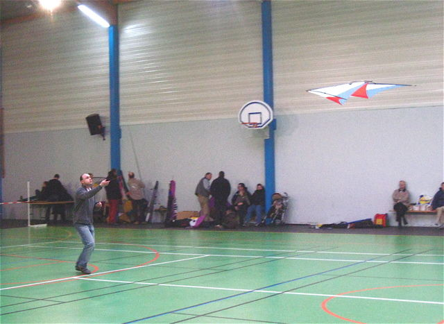
Sébastien fera une belle démo de deux-lignes, mais pas content car ce n'était pas... parfait !

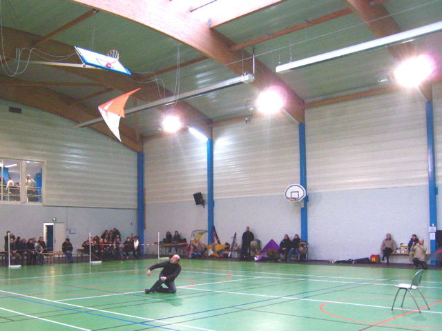
Dominique Miquet, qui n'a pas monté de magasin et n'a pas volé en Indoor depuis 10 ans, fera quand même un remarquable numéro de deux-lignes intitulé... "le Kama-Sutra du cerf-volant", où il fait voler son delta dans toutes les positions...

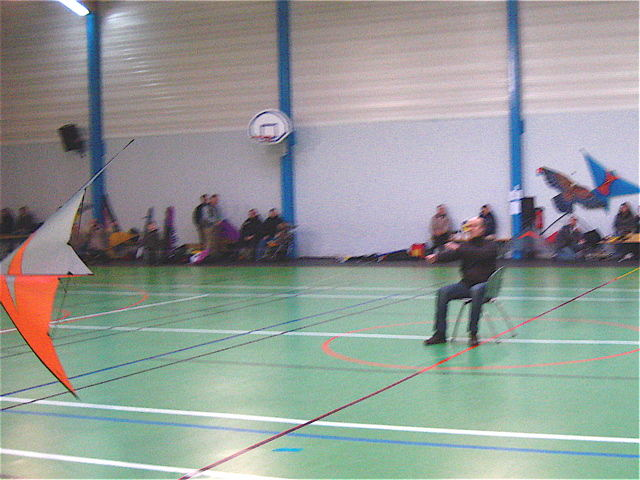
Il termine même assis sur sa chaise, ce qui demande pourtant beaucoup d'énergie !

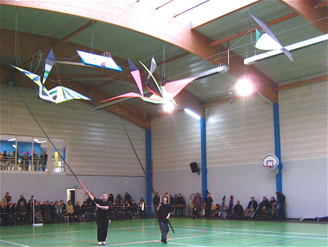
Frank et Maxime présente leur numéro de Mallards, ce CV de Louis Sko à la plastique remarquable. Ils en font même voler en train de deux, un adulte et un jeune qui suit Papa (ou Maman ?)...

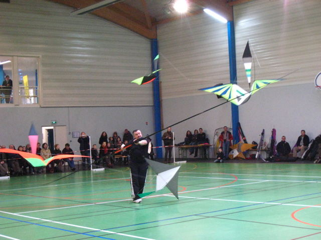
Inspiré par Yann, Frank en fera même voler un moment... 4 à la fois, enfin 2 trains de 2 ! Mais il faut être costaud comme Frank, parce que ça tire !

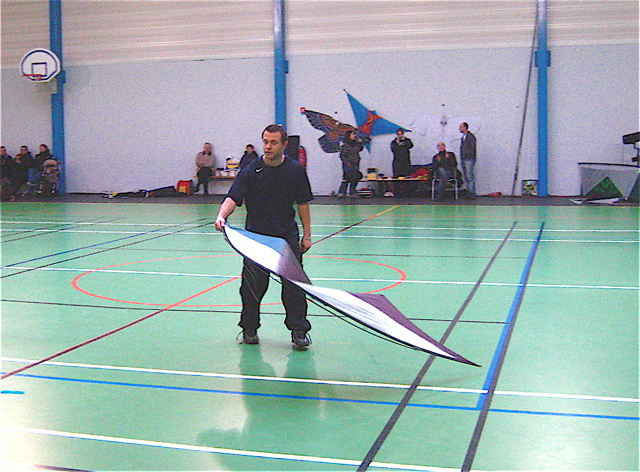
Je ferai mon numéro habituel, 4 cerfs-volants du mini au 8 m, vol sans canne... Jéremy me succède avec une belle prestation, une grande aisance et très peu d'erreurs... Il s'y est bien remis après une absence prolongée des indoors.

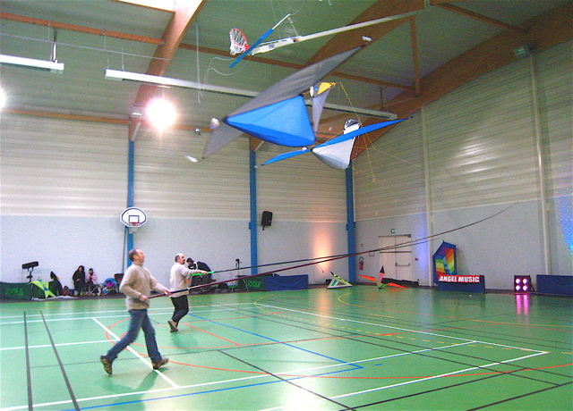
Prouvy fera aussi voler ses Malards, dont je trouve qu'ils volent mieux et traînent moins que ceux de Moissy. Encore une prestation spectaculaire...

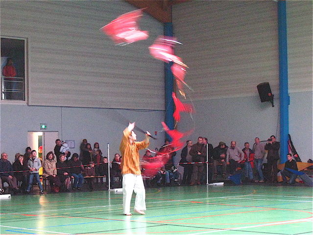
Yann revient avec son Dragon d'oiseaux qui volent d'abord en douceur et harmonieusement et finissent en un étourdissant tourbillon de frénésie !

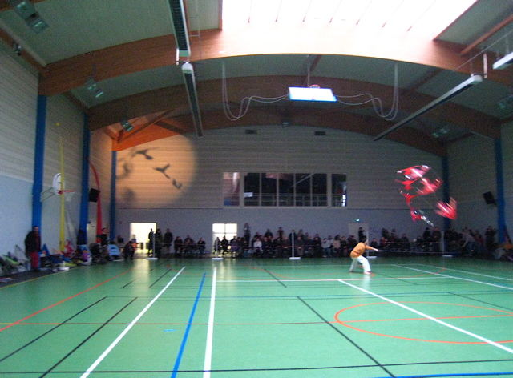
Un projecteur de poursuite... projette sur le mur le schéma de la prestation...

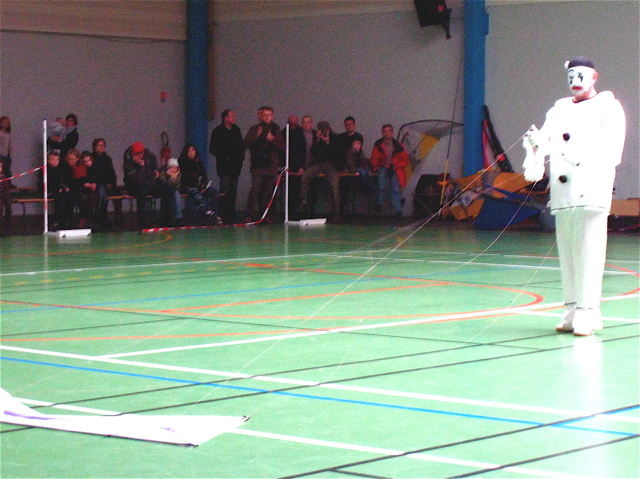
Enfin, Michel, en automate-Pierrot, reviendra, amené sur son diable par le nain de jardin Astrid, pour une belle et spectaculaire démo de Révo au-dessus des têtes du public...

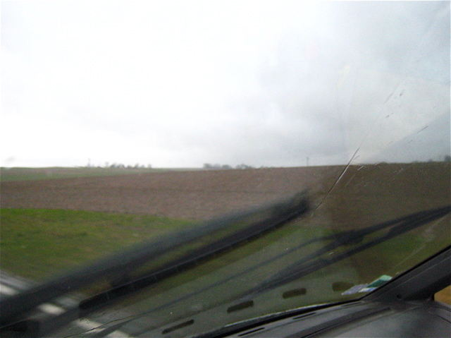
Le spectacle est fini, on remballe... Il tombe toujours des cordes, foin du tourisme, je rentre à la maison à travers les plats paysages du Nord puis de la Picardie, bien arrosés...
Bertry 2009 : Un nouvel Indoor, c'est une bonne nouvelle. Une belle salle, une bonne et généreuse organisation, je pense que le spectacle a bien plu au public assez nombreux, j'espère qu'on recommencera ! Pour avis, un festival Cerf-Volant en extérieur aura lieu les 10-11 juillet 2010, et l'accueil devrait être aussi bon !